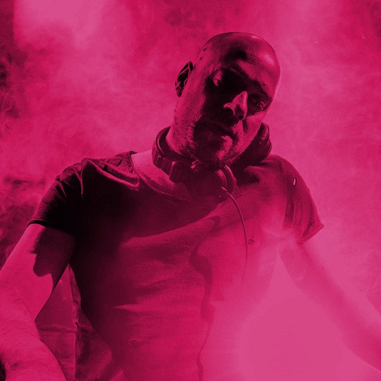

Bart Claessen: Chasing the first light


Another uplifting trance DJ/producer to emerge out of the thriving Holland scene and responsible for massive anthems like Playmo and his remake of the Above & Beyond classic Razorfish, Bart Claessen is on his way to Australia for two massive gigs this weekend. And as he tells ITM, there’s a funny story behind his latest hit First Light. Based on key elements of his bootleg of Need To Feel Loved by Reflekt that never received an official release, when it was still getting thrashed more than a year later he decided it was high time that it saw a proper release.
“I took out the vocals, recorded new ones and did some fine-tuning on the production side. That’s how First Light was born!” Bart Claessen is one of those names in trance we’ll be hearing more and more about over the coming months, and ITM catches up with him before his gigs at Sublime and Ultraworld this weekend.
You started playing piano when you were young. Do you think it’s necessary to come from an instrumental background to be a successful DJ?
Just to be a DJ: no. To be a producer… I don’t think it’s necessary, but it helps for sure! The time when electronic music was just about computer bleeps and bassdrums is way behind us. To write, for example, the violin chords in my new track First Light, being able to play the piano well definitely was a big plus for me.
Your MySpace profile poses the question… “Who is Bart Claessen a few years from now?” So, how would you care to answer this question?
I wrote that question just to make sure that Í wouldn’t have to answer it! I guess I’ll be a few years older haha. And hopefully carrying some great memories with me of all amazing things I’ve experienced, places I’ve visited, and great people I’ve met in the past years.
Your latest track is called First Light. Can you tell us a little about it please?
That’s quite a long story. The basis was made when I produced a bootleg of the huge Need To Feel Loved by Reflekt. It never got officially released, but the DJ support and crowd response was extremely big. So when many people were still sending me emails and asking me about a release for that track, and DJs still playing it about a year after I produced it, I decided to reconstruct it into a new track. I took out the vocals (which actually were the only samples from Reflekt I used), recorded new ones, and did some finetuning on the productional side. That’s how First Light was born!
You’ve released a few tracks but have you plans for an LP anytime soon? What about an artist album?
No direct plans have been made yet, but why not? And I’m sure that 2008 will bring the first Bart Claessen mix album, so that’ll be a good start!
What are your plans/goals for 2008?
This year I had the most amazing gigs, I really hope for just as many nice ones in 2008! Also there are a few new productions coming up, and some remixes of great tracks. Starting with my remix of Above & Beyond’s Razorfish classic in February on Anjunabeats.
What can we expect from your set at Home and Ultraworld?
I think that most of my radio mixes are quite a good example of what I play. For example, check out the guestmix I’ve just recorded for Markus Schulz’ Global DJ Broadcast radio show on livemix.bartclaessen.com. It’s always some kind of mix of techy and trancy stuff, could be quite banging as well. Of course, my own productions and remixes are the best example of my style!
Catch Bart Claessen chasing the ‘first light’ at the following gigs this weekend…
Friday 6th December: Sublime, Home Nightclub
Sat 8th Dec: Kryal Castle, Ultraworld Festival, Melbourne